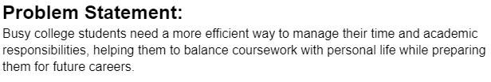
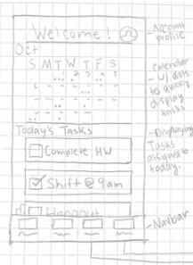
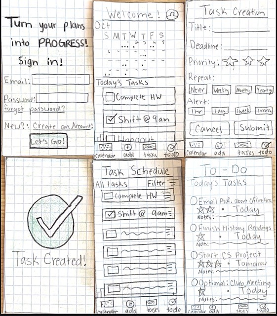

Problem Statement
Busy college students need a more efficient way to manage their time and academic responsibilities, helping them to balance coursework with personal life while preparing them for future careers.
Affinity Diagram

An affinity diagram for a project to help college student manage their time and responsibilites. The affinity diagram has 8 clusters: Audience, Management, Needed Staff, Starting Project, Marketing/Advertising, Pricing, Interface, and Features. Across these clusters, there are 24 ideas. To start, I made notes about what happened to come to mind about this idea. Then, I grouped similar ideas together and named the cluster. While completing this exercise, I realized how many different factors go into creating a project. It was interesting to see all of the different ideas go from random to an organized system.
Sketches

Sketch 1:
The homepage depicts a calendar with dots representing the number of tasks on each day. Additionally, it highlights tasks specific to the current day.
Sketch 2:
This is a task creation screen where users can create new tasks to organize. It includes title, deadline, priority by star system, repeat, and alerts.
Sketch 3:
Task Schedule contains all imported, upcoming tasks—colored-coded categories with mark-as-done boxes. Ability to filter by certain parameters. AI suggestions on when to complete tasks based on priority and number of tasks.
Prototype
This paper prototype illustrates a time management app created to assist users in efficiently organizing tasks, events, and notifications. It shows the basic displays and user engagements related to the app's features.